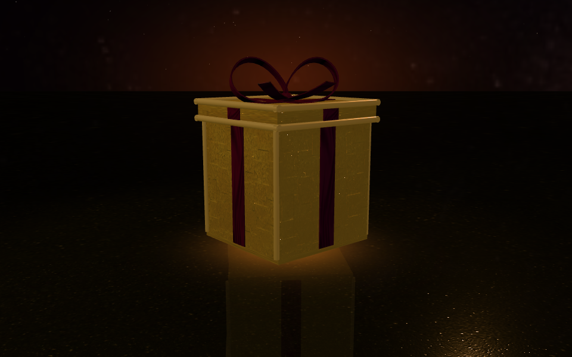

For Dr. Nicholas Polys, Director of Visualization at Virginia Tech
Real terrain from satellite data, a million Gaussian splats, AI that writes X3D and a validator that keeps it honest, Blender and the browser rendering the same file. Each scene is a standard X3D file you can open, orbit and check.

Click to open